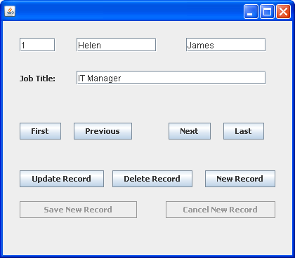

Databases and Java Forms
Databases and Java Forms: 1 2 3 4 5 6 7 8
In this section, you'll create a form with buttons and text fields. The buttons will be used to scroll forwards and backwards through the records in a database table. We'll also add buttons to perform other common database tasks. The form you'll design will look something like this:

Start a new project for this by clicking File > New Project from the NetBeans menu. When the dialogue box appears, select Java > Java Application. On step one of the dialogue box, type database_form as the Project Name. Uncheck the box at the bottom for Create Main Class. Click the Finish button to create an empty project.
In the Project area on the left locate your database_form project, and right click the entry. From the menu that appears select New > JFrame Form:
When the dialogue box appears, type Workers for the Class name, and Employees as the package name. When you click Finish, you should see a blank form appear in the main NetBeans window.
Add a Panel to your form. Then place four Text Fields on the panel. Delete the default text for the Text Fields, leaving them all blank. Change the default variable names for the Text Fields to the following:
textID
textFirstName
textLastName
textJobTitle
Add a label to your panel. Position it just to the left of the job title Text Field. Enter "Job Title" as the text for the label. Arrange the Text Fields and the Label so that your form looks something like this:

Now have a look at the Inspector area to the left of NetBeans. (If you can't see it, click Window > Inspector from the NetBeans menu.) It should match ours:

What we want to do now is to have the first record from the database table appear in the text fields when the form first loads. To do that, we can call a method from the form's Constructor.
First, though, we can add Client Driver JAR file to the project, just like last time. This will prevent any "Driver Not Found" errors. So, in the Projects area, right click the Libraries entry for your project. From the menu that appears, select Add JAR/Folder. When the dialogue box appears, locate the derbyclient.jar file. Then click Open to add it to your project.
In the main NetBeans window, click the Source button at the top to get to your code. Now add the following import statements near the top:
import java.sql.Connection;
import java.sql.DriverManager;
import java.sql.SQLException;
import java.sql.Statement;
import java.sql.ResultSet;
import javax.swing.JOptionPane;
You've met all these before, the first five from the previous section. The last one, JOptionPane, is so that we can display error messages.
Inside of the Class, add the following variable declarations:
Connection con;
Statement stmt;
ResultSet rs;
Just below the Workers Constructor, add the following method:
public void DoConnect( ) {
}
Now add a call to this method from the Constructor:
public Workers() {
initComponents();
DoConnect();
}
Your code window will then look like this: (Don't worry if you have underlines for the import statements. Unless they're red underlines. In which case, you may have made a typing error.)
What we've done here is to set up a Connection object called con, a Statement object called stmt, and a ResultSet object called rs. We've set them up at the top because our buttons will need access to these objects.
When the form loads, our DoConnect method will be called. We can add code here to connect to the database, and display the first record in the text fields.
The code to add for the DoConnect method is almost identical to the code you wrote in the previous section. It's this:
One line that you may not have met is this one:
String id = Integer.toString( id_col );
Because the ID column is an Integer, we need to convert it to a String for the setText method of the Text Field. We need to do this because Text Field's don't accept Integer values directly - you need to convert them to text.
All the other lines in the code should be familiar to you by now. Study the code to make sure you know what's happening. Then add it your own DoConnect method.
You can run your programme now. First, though, make sure to start your Java DB server from the Services window.
When you run your programme, you should see the first record displayed in the Text Fields:
Now that we have the first record displayed, we can add some buttons to scroll through the rest of the table data. We'll do that in the next lesson.